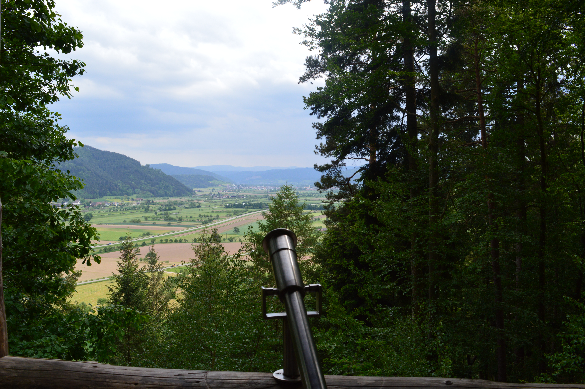
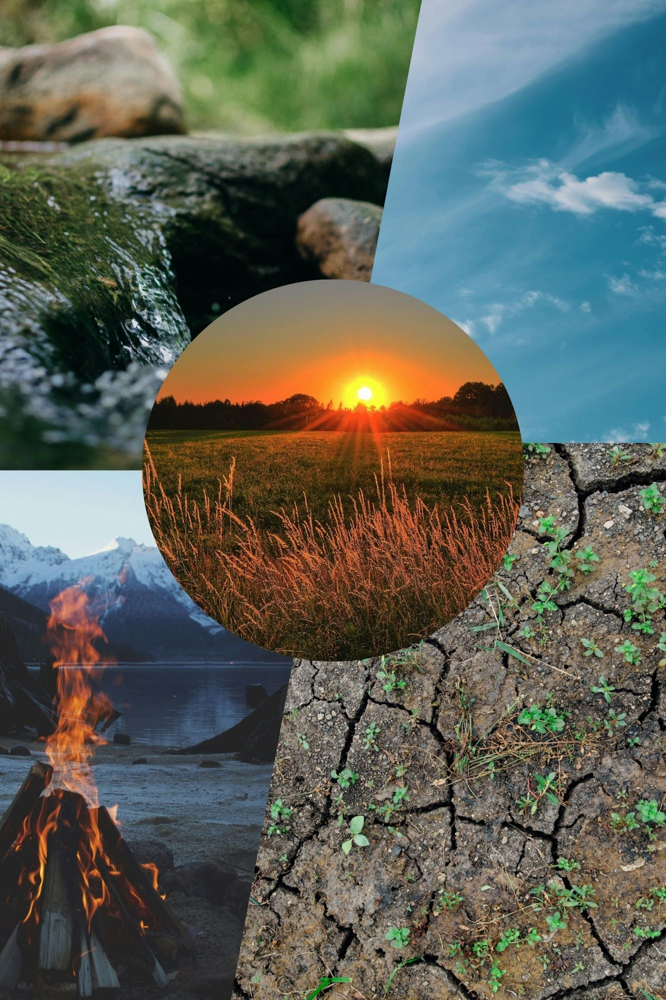

Selbsterkenntnis
Entdecken Sie Ihre wahren Bedürfnisse, Werte und Potentiale in der beruhigenden Atmosphäre der Natur.
Persönliche Entwicklung in Verbindung mit der Kraft der Natur
Naturcoaching verbindet persönliche Entwicklung und Beratung mit der Kraft der Natur. Das Coaching findet nicht im Büro, sondern draußen statt – zum Beispiel im Wald, im Park oder auf freien Feldern.
In der natürlichen Umgebung finden wir Ruhe, Klarheit und neue Perspektiven, die uns dabei helfen, unsere inneren Ressourcen zu entdecken und zu stärken.

Entdecken Sie Ihre wahren Bedürfnisse, Werte und Potentiale in der beruhigenden Atmosphäre der Natur.
Finden Sie Ihren individuellen Weg und entwickeln Sie ein klareres Verständnis für Ihre Lebensziele.

Gewinnen Sie neue Perspektiven auf festgefahrene Situationen und entdecken Sie ungeahnte Lösungswege.

Integrieren Sie verdrängte Persönlichkeitsanteile und wandeln Sie sie in kraftvolle Ressourcen um.
Stärken Sie die Verbindung zu Ihrem Körper und lernen Sie, dessen Weisheit zu verstehen und zu nutzen.

Entwickeln Sie eine liebevollere Beziehung zu sich selbst und anderen durch achtsame Naturerfahrungen.
Finden Sie inneren Frieden und emotionale Balance durch die heilsame Kraft der Naturverbindung.

Entdecken Sie Ihre persönlichen Energiequellen und lernen Sie, diese bewusst zu aktivieren und zu nutzen.
Naturcoaching ist für Einzelpersonen und Gruppen geeignet. Es passt besonders gut für Menschen, die:
Naturcoaching hilft dabei, neue Perspektiven zu gewinnen und eigene Ressourcen zu stärken – und das in einer Umgebung, die zur inneren Ruhe und Klarheit beiträgt.
Die Natur wird zu Ihrem Coaching-Partner und unterstützt Sie dabei, authentische Lösungen für Ihre Herausforderungen zu finden.